大模型Agent介绍与应用¶
学习目标¶
- 了解什么是AI Agent
- 了解AI Agent和传统软件的区别和联系
- 了解AI Agent的应用场景及实现工具
- 掌握如何基于CrewAI框架开发AI Agent的流程
1 什么是AI Agent¶
在人工智能领域，AI Agent（Artificial Intelligence Agent）是指一种能够感知环境进行自主理解，进行决策和执行动作的智能实体。
不同于传统的人工智能，AI Agent 具备通过独立思考、调用工具去逐步完成给定目标的能力。Agent可以是物理实体（如机器人）或虚拟实体（如软件程序）。
1.1 AI Agent的主要类别¶
谈到 AI Agent，很多人都认为它是 LLM 的产物，毕竟大部分人接触 Agent 是从基于GPT-4 的 AutoGPT、 BabyGPT、GPT-Engineer 等开源 Agent 程序开始的。 但了解 AI Agent 的人应该知道，Agent 概念并不是当今的产物，而是伴随人工智能而出现的智能实体概念不断进化的结果。
伴随着 AI 技术的发展，至 2000 年左右， Agent 已经衍生出不少种类。 根据其感知的智能和能力程度的不同，可以将 AI Agent 分为以下几类：
- 简单反射型 Agent：根据当前环境状态做出直接反应。eg：一个简单的温度调节器，它根据当前温度调整加热或制冷。
- 目标导向型 Agent：它们根据预设的目标来做决策，能够规划和执行序列动作以达成这些目标。eg：自动驾驶汽车，以安全到达目的地为目标进行各种驾驶操作，如特斯拉的自动驾驶统。
- 学习型 Agent：这类Agent能够基于过去的经验和数据学习，不断优化自身的表现。eg：基于用户反馈不断优化的聊天机器人。
当下谈论到的AI Agent：本质是一个控制 LLM（大语言模型） 来解决问题的代理系统。
1.2 AI Agent的原理（LLM Agent）¶
定义：AI Agent = LLM+ 记忆 + 任务规划 + 工具使用
- AI Agent是一种超越简单文本生成的人工智能系统。它使用大型语言模型（LLM）作为其核心计算引擎，使其能够进行对话、执行任务、推理并展现一定程度的自主性。简而言之，Agent是一个具有复杂推理能力、记忆和执行任务手段的系统。
主要组成部分：
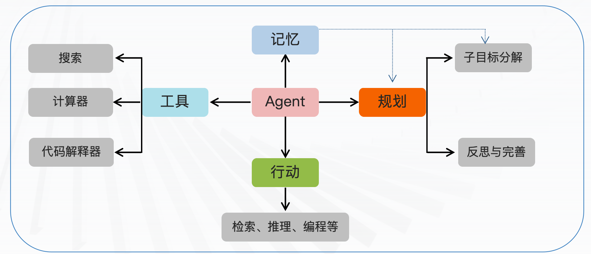
AI Agent 工作流程：
- 01-Prompt提示词:
- 提示词是Agent接收到的初始输入，它描述了Agent需要完成的任务或解决的问题。
- 02-LLM大模型:
- 大模型是Agent进行任务规划和知识推理的重要工具。利用LLM大模型对提示词进行深入分析，生成可能的解决方案。
- 03-Memory记忆:
- 可以保留当前用户输入内容；上下文内容；外部向量存储的知识库；网页信息等。
- 04-Planning规划:
- 任务规划是Agent根据提示词、大模型以及知识库进行决策和规划的过程它涉及对任务的分解、目标的设定、路径的规划等。
- 05 Action行动：
- 行动执行是Agent根据任务规划结果执行具体操作的过程。包含工具：计算器、代码解释器、搜索、API等
举例说明AI Agent的工作原理：
- 以“AI Agent来处理客户的退货请求”为例，进而理解Agent的原理：
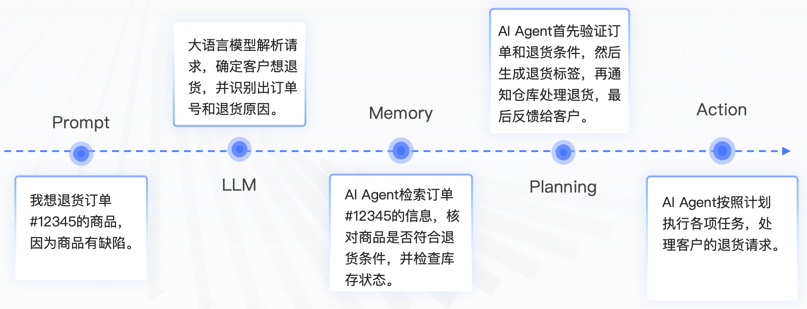
1.3 AI Agent呈现的主要形式¶
当前基于大模型的AI Agent的呈现形式对比：
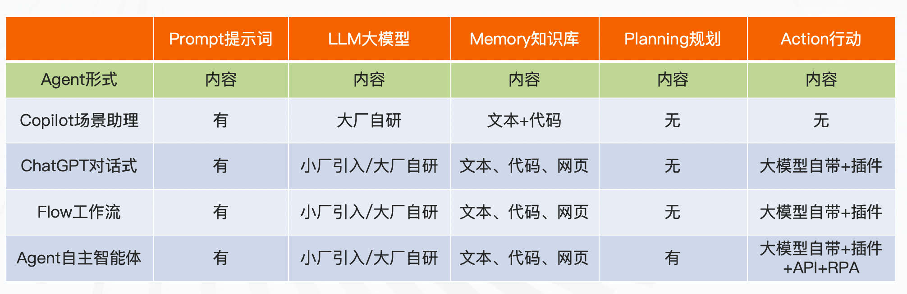
2 AI Agent和传统软件的区别¶
AI Agent将使软件架构的范式从面向过程迁移到面向目标。
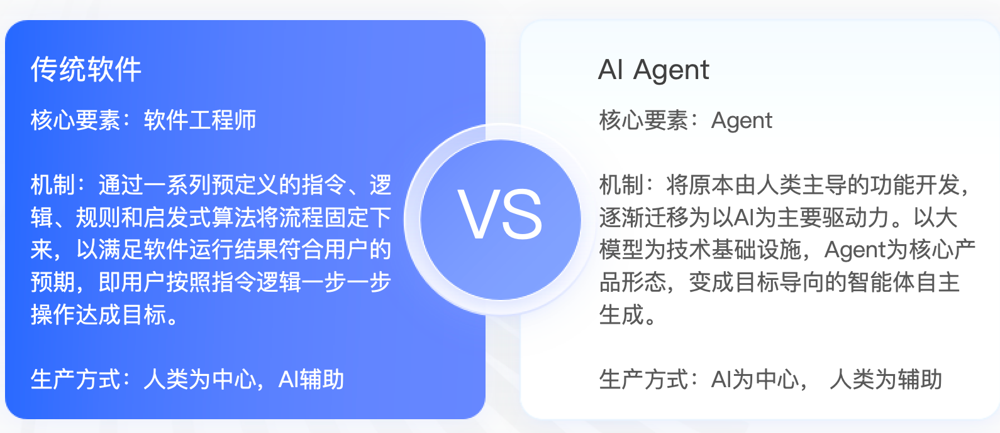
传统软件的架构只能解决有限范围的任务，AI Agent的架构则可以解决无限域的任务
3 AI Agent的应用场景及实现工具¶
3.1 AI Agent的应用场景¶
AI Agent 的应用范围非常广泛，包括但不限于：
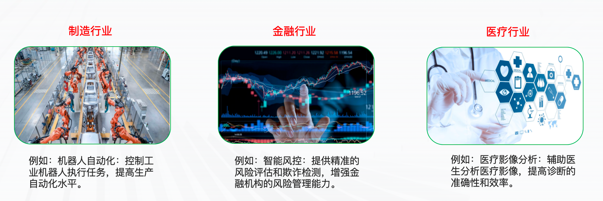
AI Agent 的广泛应用可以极大的减轻企业或个人的时间和人力成本，提高工作效率，丰富人们的生活体验
3.2 AI Agent的开发工具¶
其实在前面章节我们讲到的GPTs以及Assistant API本质都是AI Agent，或者说AI Agent的初代产品。目前，国内外已出现多个领域的 AI Agent 架构与产品。下面我们就举个代表性的例子：
百度 AgentBuilder：
- 一款智能体开发工具,旨在让每个人和组织都能开发AI Agent。它提供了构建、训练和部署AI Agent的全流程支持。
- 访问地址：https://agents.baidu.com/center
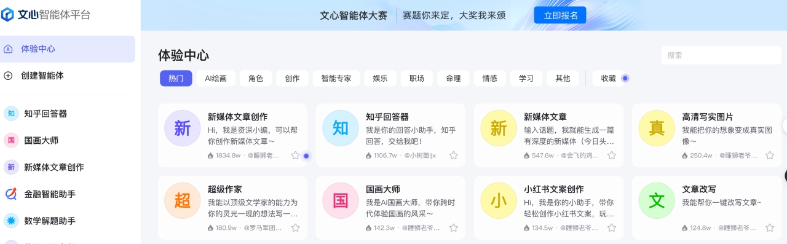
字节扣子平台：
- 用户可以在上面快速搭建基于大模型的问答Bot等AI Agent应用,并发布到社交平台。
- 访问地址：https://www.coze.cn/home
昆仑万维天工SkyAgents平台：
- 一个面向企业的AI Agent开发平台,集成了大模型、知识库等模块,支持构建定制化的AI Agent解决方案。
- 访问地址：https://model-platform-skyagents.tiangong.cn/home/agent
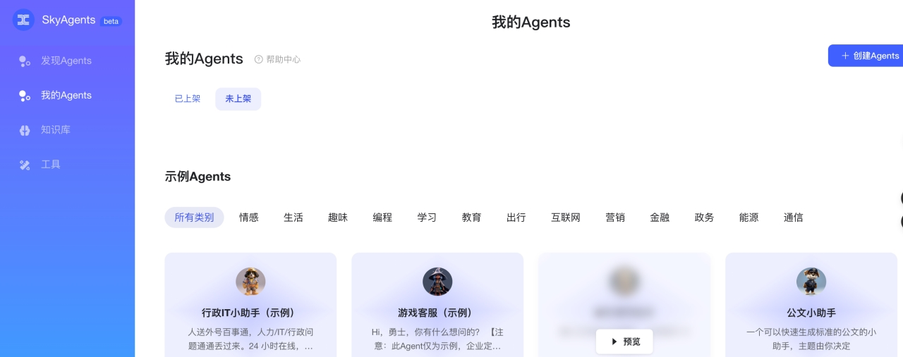
AgentGPT：
- 一个基于GPT-4的开源AI自动化机器人工具，可以让你在浏览器中配置和部署自主的 AI机器人。
- 访问地址：https://agentgpt.reworkd.ai/zh
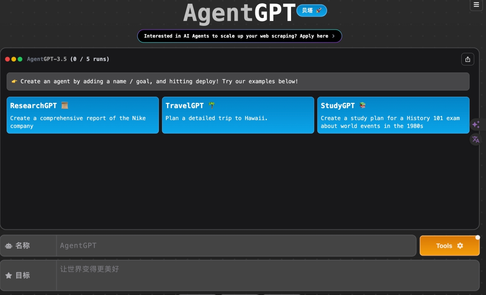
LangChain：
- 一个用于构建AI应用的开源框架,其中的Agents模块支持开发基于大模型的AI Agent。它提供了Agent管理、记忆模块、工具集成等能力。
- 访问地址：https://github.com/langchain-ai/langchain
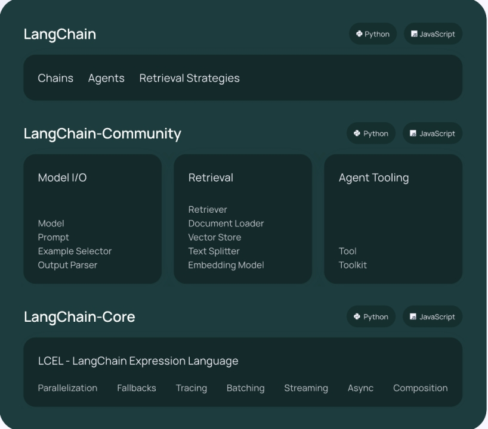
AutoGen：
- 一个面向多Agent系统的开源框架，可通过多个代理进行对话以解决任务，实现LLM应用程序的开发。AutoGen代理是可定制的、可对话的 ，并且能够无缝地允许人类参与。
- 访问地址：https://github.com/microsoft/autogen
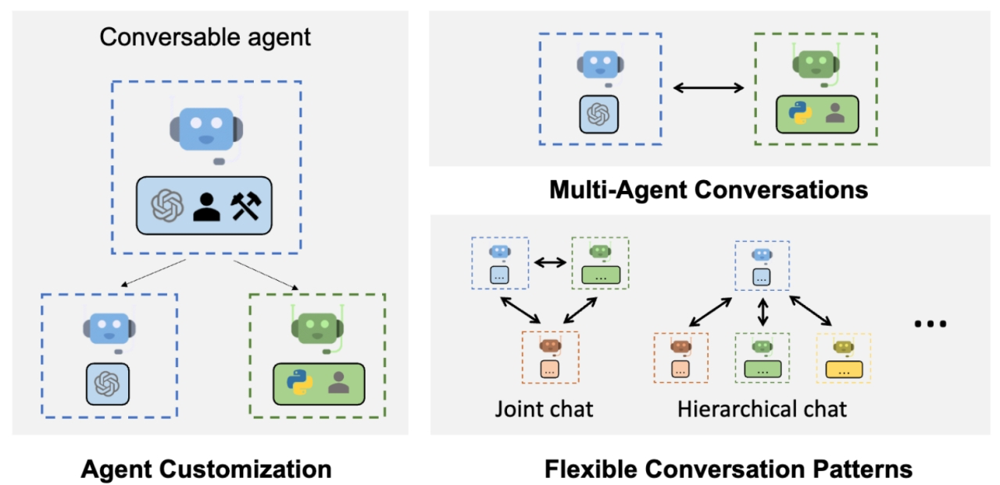
ChatDev：
- 一个基于大型语言模型(LLM)的软件开发框架,旨在通过自然语言交互和多智能体协作的方式,实现软件开发全流程的自动化。
- 访问地址：https://github.com/OpenBMB/ChatDev
CrewAI：
- 建立在LangChain之上的一个框架,旨在支持构建由多个AI智能体(Agent)组成的协作系统。
- 访问地址：https://github.com/joaomdmoura/crewAI
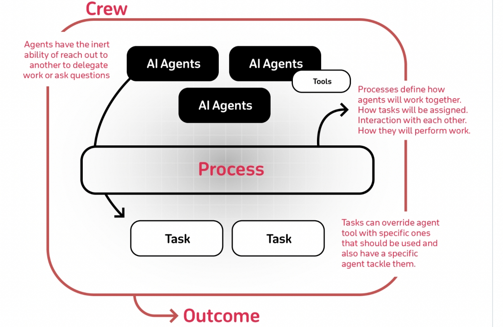
本章小结¶
本章节主要介绍了什么是AI Agent，详细阐述了尤其是LLM时代下AI Agent的工作原理，并对比分析了AI Agent和传统软件的区别，以及如何实现AI Agent的开发工具进行了介绍。